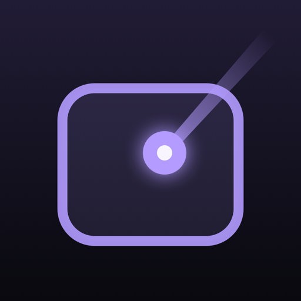

Tap to click. Hold to drag
Scroll

PointerPad РусскийPoint the phone at the screen and the cursor is there. Or slide a finger like on a trackpad. Straight over Bluetooth: no Wi-Fi, no server, no subscription.
Free. macOS 14+, Apple silicon and Intel; iPhone with iOS 17+. Signed and notarized by Apple.
Once. After that your iPhone finds your Mac on its own, like AirPods.
A tiny menu bar app. Allow Bluetooth and Accessibility — macOS won’t let any app move the cursor without it.
Pick your Mac from the list of ones nearby. No IP addresses, no shared Wi-Fi, no firewall settings.
The same six digits on your iPhone and your Mac — click Allow. Someone else’s phone can’t sneak in this way.
Two modes and a remote, one tap apart — and the cursor never jumps when you switch.
Hold your iPhone like a remote: wherever its top edge points, the cursor goes. Tap to click, hold to drag. Your Mac’s own trackpad keeps working too.
Phone on the desk or your lap. One finger moves the cursor, two scroll and right-click, hold and slide to drag a window.
Pause, next track, volume and screen brightness — with the Mac’s own on-screen indicators.
We read hundreds of reviews of apps like this. The same things make people angry again and again.
| What annoys people | The usual | PointerPad |
|---|---|---|
| Connecting | A server on the computer, the same Wi-Fi, ports in the firewall | Straight over Bluetooth, the Mac shows up by itself |
| Price | Subscriptions, ads, Bluetooth “in Pro” | No subscription, no ads; Bluetooth is the core, not an upsell |
| Trust | A mystery program with access to your whole computer | Signed and notarized by Apple; every command from the iPhone is signed with a key |
| Data | Accounts, analytics, the cloud | Nothing about you leaves your devices. The only request online: the Mac app checking GitHub for a new version — and you can turn it off. |
No subscription, no ads, no pop-ups asking you to upgrade.
Pointer, trackpad, clicks, scrolling, dragging, music, volume and brightness. The Mac app too. Forever.
Keyboard shortcuts, presentation mode and macOS gestures are on the way. When they arrive: one payment, no subscription. Everyone who installs version 1 gets Pro free.
An iPhone can’t move the cursor on another computer by itself. A tiny helper in the Mac’s menu bar takes commands over Bluetooth and passes them to macOS. It can’t be on the Mac App Store — Apple doesn’t allow apps that control the cursor there — so you download it here, signed and notarized by Apple.
No. Just Bluetooth on both devices. It works with no internet at all.
Across a room: Bluetooth holds steady at about 10 meters (30 feet).
Nothing happens unless you click Allow on your Mac and the codes match. After pairing every command is signed with a key only your iPhone and your Mac know.
On the Mac: Bluetooth (to talk to the iPhone) and Accessibility (to move the cursor and press keys). On the iPhone: Bluetooth and Motion (for pointer mode).
Just iPhone and Mac for now — done properly.
Something not working, or an idea? Write to nordlight.apps@gmail.com — a person reads every message. Writing from inside the app is easiest: “Contact support” adds your app and system versions for you. Bug reports are also welcome on GitHub.